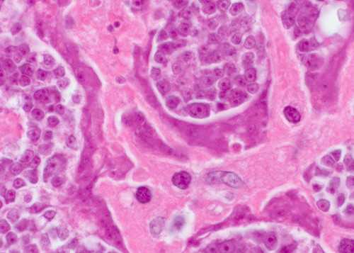

Kellemetlen szájszag paraziták miatt. Az orvos elmondta az embereknek, hogy hogyan kell megmenteni magukat és a szeretteiket.
A szerkesztő megjegyzése: az orvosok felfedezték egy új kellemetlen szájszag okát: fertőzés okozott parazitákkal. A tanulmányba azt mondják, hogy a parazitai mérgező hulladékok, alkotnak baktériumok és férgek számara a gyomorban kedvező élőhelyet. És És azért fertőzött parazitákkal embereknek kellemetlen szájszag lehet.
— Ma erről a Parazitológiai Intézet igazgatójával beszélünk.
— Jó napot, doktor! Kezdjuk a fő kérdéssel. Ez igaz, hogy az országunk, az egyik a leg magasabb paraziták fertőzés szinttel nép között?
«— Igen, az országunk az első helyen áll a paraziták fertőzéssel. Ez a rossz városok ökológiai állapot hibája és a mozdulatlan kormány, közöny az emberekhoz.»
— Doktor úr, ez tényleg minden igaz a rossz lehelet állítások kapcsán és a parazita fertőzés?
— Pár évvel ezelőtt, az orvosi közösség úgy gondolták, hogy a rossz szájszag keletkezik a szájban. Ehelyett a legújabb vizsgálatok kimutatták, hogy valójában a fő oka a gyomorban rejlik, (ami mindig hozza kényelmetlenséget, ha fertőzött). Így a kutatók rájöttek, hogy nem lehet figyelmen kívül hagyni ezeket a tüneteket. Fertőzés kibővített formában hozzájárul az összes létező súlyos betegségek szinte megjelenésébe.

Rossz szájszag ez van a paraziták jelenléte jelei a szervezetben
ami vezethet a halálos szövődményekhoz
Én személy szerint bízok a kutatásnak, és azt lehet mondani, hogy az eredmények összhangban vannak a miénkkel. Egyszerű „rossz szájszag” megváltozik egy súlyos betegségbe. Az a tény, hogy mintegy 92 százaléka a halálesetek kapcsolódnak a paraziták jelenlete a szervezetben. És ez nem csak halál a betegségtól, sőt, a legtöbb az úgynevezett „természetes halállak” valójában parazitáktól miatt bekövetkeztek.
— Mint általában, a parazitákkal fertőzve emberek gondolnak csak hétköznapi férgekról, mert ezek is okozhatnak rossz szájszagot, és akár halált is?
— Tulajdonképpen, nincs szüksége azt gondolni, hogy ez csak a kártevők férgek. Van egy hatalmas mennyiségü különböző paraziták különböző szervekben. Nyilvánvaló, hogy ez kapcsólódik más betegségekkel. És a férgek, pontosabban bélférgek, nagyon veszélyesek. Ők megeszik a valódi értelemben a beleket, ami vezethet
rothadáshoz és megsemmitéshez, egészen haláláig. És a fenti amellett, az bélférgeket nehézen felismerni és elpusztítani.
Rajtuk kívül több ezer paraziták vannak, amélyek kényelmesen élnek a májba, agyba, tüdőbe, vérbe, a gyomorba és a belekbe. És szinte mindegyik halálos. Az első része, amely azonnal kezd agresszíven hatni, és elpusztítja a testet. A második rész a még nem hat gyorsan és észrevétlenül, amíg el nem érik azt az állapothoz, amíg az emberi szervezet nem lesz képes elviselni a jelenlétét, és nem jön meg a halál.
Ezen kívül, bizalommal mondhatom, hogy szinte mindannyian parazitákkal fertőzve vagyunk. A probléma abba van, hogy legtöbb közülük szinte láthatatlan. És mikor megjelennek a következmények, az orvosok végül, próbálják megszüntetni.
„Van több ezer típusú paraziták, amélyek élnek a májba, agyba, tüdőbe, vérbe, gyomorba. És szinte mindegyik - halálos, Minden általában kezdődik egy egyszerű kellemetlen száj szaggal.”
— Elmondhat néhány konkrét fertőzés parazitákkal példát?
— Én tudok elmondani több száz esetekról. De talán, megállom azokon, amelyek a leginkább egyértelműen bizonyítják a teljes veszélyt a parazitáktól.
Először is, mint kiderült, néhány galandféreg rák kialakulásához vezethet. Sőt, hivatalosan
nem az ember fertőzik, hanem a férgek. De a rosszindulatú sejtek terjednek a szervezeten, megfertőzve az embert is. Ez akkor történik, amikor féreg lárvája behátolnak bélből az emberi nyirokcsomókba. Ennek eredményeként, rákos daganatokba változnak, ami megfertőzi gyorsan az embereket. A halál megjön néhány hónapig során. Már csak ezen a héten rögzítésre került még egy másik eset az emberi halál ilyen daganatoktól.
A kép közepén: a rákos sejtek, amik továbbítottak embereknek a parazita férgektól.

Egy másik gyakori eset - fertőzés parazitákkal az emberi agyát. Ez vezet a neurózishoz, a fáradtsághoz, a túlzott ingerlékenységhoz és hangulati ingadozásokhoz. És a későbbi fázisában, további betöltés parazitákkal az agyat, fejlődnek még súlyosabb betegséget, amelyék végül halálhoz vezetnek.
«Van egy boncolás fotó archív, ahol a parazitákat megtaláltunk a szervekbe. Nem tudom megmutatni, ezeket a képek, mert nagyon szörnyű.»
A harmadik példa - az emberi szív fertőzés parazitákkal. Úgy gondoljuk, hogy ez egy nagyon gyakori betegség közülük. De valójában bizonyos számú szív férgek vannak jelen körülbelül 23% -nak embereknek. És ha valójában minden negyediknek. A korai szakaszban teljesen láthatatlanok, és a hatása a szervezetre nullára csökken. De minél több idő telik el, annál több férgek tevékenységét láthatja az emberi szívben. Ők azok, akik okoznak a legtöbb szívbetegséget, és ha beszélni a hirtelen halálról a szívmegállástól, akkor a paraziták részvényre marad akár 100% halálesetek.
— Mivel még a veszélyes fertőzés?
«A férfiaknak, a paraziták okozhatnak a prosztatagyulladást, impotenciát és - adenomát, hólyaghurut, homokot és köveket a húgyhólyagba.
A nőknek: petefészkek fájdalomat és gyulladást. Fejlődik mióma, méh, fibrocisztás mell-betegségek, gyulladás a mellékvese, húgyhólyag és a vese. És persze, ez okoz bőr korai öregedés.»
— Hogyan lehet megvédeni magát a parazitáktól? Vannak valami vizsgálatok, gyógyszerek?
— Sajnosan, azt mondhatjuk, hogy mai napra nem léteznek valami tényleg pontos paraziták diagnosztizálás felszerelés az emberben. Ez részben azért, mert túl sok típus paraziták vannak (több mint ezer típus ), és még attol is hogy nagyon nehezen őket diagnosztálni. Teljes paraziták elemzési eljárás elérhető Magyarországon csak néhány helyen, és nagyon drága.
Az első tünetek amélyekkel lehet mondani azt, hogy a szervezetben élnek a paraziták, a következők:
- Kellemetlen száj szag
- Allergia (kiütés, könnyező szem, orrfolyás)
- Gyakori megfázás, torokfájás, orrdugulás
- A krónikus fáradtság (Gyorsan elfárad, mit csak nem csinál)
- Gyakori fejfájás, székrekedés vagy hasmenés
- Ízületi- és izomfájdalmak
- Idegesség, alvás - és étvágyzavar
- Sötét karikák, a szem alatti táskák
Hogy ha legalább 2 ilyen tünetei van - nyilvánvalóan ez a paraziták jelei a szervezetben.
Ha beszélünk a gyogyszerekról, akkor itt még mindig van egy kis probléma. Ez ideig van csak egyetlen kifejlesztés, ami segít megszabadulni a parazitáktól. Termelik Olaszországon.
— Milyen ez a kifejlesztés, kivel volt teremtve, - tud többet mondani?
— Ez a parazitaellenes eszköz , amely teremtve volt részvételével a Parazitológiai Olaszország intézettel és egy csoport független fiatal tudósokkal. Mi még párhuzamosan dolgoztunk még más husz parazitaellenes eszközökkel. De a fejlesztési folyamat belül, volt döntve megállni a , mint a leghatékonyabb módszer.
ez egy egyedülálló összetétele ami tartalmaz: fekete fokhagymát, francia algát, vörös algát, tansy, fahéjet és római kömény olajot . A feljesztés és tesztelés folyamán, ez az eszköz bizonyult mint rendkívül hatékony. Ma már csak ez tényleg hatékony feljesztés. És ha ez csak a pénzről volt szólva, akkor az exportra kellet volna írányitani az összes árukat. A Nyugaton, szinte bármilyen áron megveszik. De nálunk van egy megbízást a hatóságoktól, amelyek szerint jelentős mennyiségű eszköz kell hogy továbbra is országban maradjon, és eladó az olasz állampolgárnak.
Ráadásul - export mozgástere a nyugati ügyfeleknek külföldön az ára több tucatszor nagyobb, mint a költség), lehetővé teszi számunkra, eladni nálunk az országba, sokkal kissebb áron mint a termelési költségek.
— Mivel olyan jó a Mivel ő különbözik a másiktól, a többi szervezett paraziták tisztító módszerektól?
— Ahogy már mondtam, mai napra ez az egyetlen hatékony parazitál test tisztító eszköz a világon. Ezért annyi nemzetközi gyógyszertári láncok és a gyógyszergyártók üldözik őt. Összehasonlítva más parazitaellenes eszközekkel, ez az eszköz működik, közvetlenül minden paraziták típusúkkal, amélyekkel az emberek is megfertőződhetnek. Figyelembe véve a diagnózis problémákkal , ez segíthet hatékonyan tisztitani az egész testet. Mint fent már mondtam, hogy szinte lehetetlen megérteni, hogy milyen parazitákkal pontosan az ember van fertőzve. A elpusztítja és eltávolitja a szervezetből a parazitákat, amélyek élnek bárhol - az agyba, a szívbe, a májba, a belekbe és így tovább. Ilyenre nem képes semmi más meglévő gyógyszerek ma.
Amellett is, ez nem kémiai gyógyszer, hanem teljesen természetes termék, amely kiküszöböli allergiás reakciókat, intesztinális egyensúlyhiányt és más problémákat, amélyk megjelenthetnek a klasszikus kezelési tablettákkal és az eredmény amellett, megterheli a testet, ami arra kényszerítve feldolgozni sok különböző kémiai vegyületeket.
— Azt hiszem, hogy az olvasóinknak lenne érdekes meghallani arról, hogy hol lehet megvenni a ? !
— Az ebben az időpontban rendelhető csak a hivatalos honlapon. Próbáltuk sokször megegyezni a gyógyszertári láncokkal, de ezek akarják, rá tenni a legmagasabb árat, és drágábban eladni, mint mi akarjuk. Értje meg azt, hogy a Parazitológiai Intézet - egy közhasznú cég. És nincs célünk pénzt keresni. Mi csak azt akarjuk, hogy mindenkinek legyen lehetösége használni ezt az eszközt. Azért mi eladjuk veszteséggel, és kompenzáljuk a különbséget az export rovására. A fő gyógyszertári láncok célja - keresni pénzt. Azért nálunk radikálisan különböző megközelítés árképzés van.
Azt remélem, hogy idővel képesek leszünk megegyezni arról, hogy a lehetséges lesz megvenni ugyanazon az áron is a gyógyszertári láncokba. Most csak lehet megrendelni az interneten. Igyekeztünk, hogy minden egyszerűen és kényelmesen legyen - az eszközt postán vagy futárral kaphatja, fizetni kell csak átvétel és ellenőrzés útán. Semmi más mozgást nem kell csinálni.
— Talán szeretne valamit mondani az olvasóinknak, mielőtt befejezzük az interjút?
— Az egyetlent, mit akarom megmondani -, hogy vigyázzon a életére és az egészségére. Lehet, hogy nem is fog tud róla, de benned 97-98% valószínűséggel élnek paraziták. Lehetnek bárhol - a vérben, bélben, tüdőben, szívben, agyban. Paraziták szó szerint felfalják belülről, és még mérgezik a testet. Ennek eredményeként megjelennek számos egészségügyi problémák, amelyek csökkentik az életet 15-25 évre. De, ha nem beszélni a hirtelen halálesetek problémákról, amelyek is gyakran kapcsolodnak együtt a paraziták hatással az emberi szervezetre.
P.S.: Kértük Pirelli professzort arra, hogy további kedvezményt olvasóinknak csinálni. Segített nekünk, és most mindenki tud megvenni a egy további kedvezménnyel. Rendelni 50% kedvezménnyel
Cristina Santi
fotója nyílt forrásokból
Budapest, Anna
Rendeltem ezt az eszközt magamnak. Nekem is volt rossz száj szag. Már az ötödik napra, éreztem, hogy a légzésem frissebb és élvezetesebb lett. Ezzel mindennel, megjavult a gyomor mükődése. Most megelőzésére iszom minden 3 honapig.
Debrecen, Sándor
Mikor kezdtem alkalmazni a , fogalmam sem volt, hogy olyan hatása lesz. A hasi fájdalom eltünt (úgy tűnik, hogy van valami a bélben volt), légszomj eltűnt, eltűntek bűz a szájból. És most a magam 53 évbe, tudok esélyt adni sok más 30 évesnek. Nagyon köszönök magának, hogy ki nyissa az embereknek a szeméket és beszél a problémákról. A helyi terapeutatól nem fog hallani ilyet.
Győr, Ágica
Rendeltem a , és második napra a futár elhozta. Kezdem inni és belőlem olyan kimászott ... Nem is gondoltam, hogy a belekben, annyi sok élőlény van. Már félek is gondolni most, hogy én éltem ezzel.
Székesfehérvár, Veronika
Koszonom a cikkért. Rendelem.
Nyíregyháza, Erik
Én is rendeltem. Ígértek megküldeni egy hét belül Nyíregyházára, úgy hogy fogunk várni.
Baja, Andrea
Alkalmaztam . A hatékonysága egyszerüen csodálatos. Megéreztem magamat fiatalabb és egészségesebb. Jelentősen megjavult az immunrendszert és az eltelt 8 hónap óta, hogy volt kúrám. Korábban nem is tudtam álmodni erről. Javaslom mindenkinek.
Békéscsaba, Elena
Nem régótá néztem az emberi parazitákról egy TV-csatornán. Ott azt beszéltek hogy ez az paraziták elleni eszköz az eggyik a legjobb a világon.
Cegléd, Zsófia
Nagymamám tanított ürömmel megszüntetni a parazitákat. Az egész családom iszi, orsóférgek kimásznak gyermekekból. De nem tudtam megszüntetni a szagot a szájból. Rendeltem , légzési problémák frissességel eltüntek. Továbra már nem isztunk ezt a keserű ürömöt, és használtunk csak . A hatás olyan is, az ár megfelelő, inni sokkal kényelmesebb.
Eger, Csaba
Már régóta szenvedek fejfájástól. Alkalmaztam pár honapig belül, minden eltünt. Most meg gondolom - lehet valami élt bennem...
Luca, Győr
Interjú nagyon érdekes, köszönöm! Kinyissa az embereknek a szemét!
Kaba, Viktoria
Feliratkozom az ajánlásokhoz. Amikor kezdtem inni - belőlem ilyen kezdett kimászni, hogy bepánikoltam és fővárosi korházba elutaztam. Találtam ott egy parazitológust, megnézett rám, és azt mondta, hogy ez férgek a májból. Hogy ha nem , ez volna, 2-3 évvel kesöbb megölnék volna éngemet.
Esztergom, Brunella
Ez nem csalás? Míért csak interneten eladó?
Budapest, Mária
Brunella, olvasta legalább ezt a cikket? Az csak interneten eladó, mert a gyógyszertárakban - hazugok csak vannak, amélyek akarnak csak keresni pénzt ezen! És igen, hogy milyen itt csalas lehetséges, hogy ha fizetni kell csak, akkor mikor a csomagot fogja tartani a kézbe. Rendeltem - a futár pedig hozta nekem, mindent megnéztem, és csak útána fizettem. A postan az is volt, ott is kell fizetni, mikor már megkapta a csomagot. Internetem most minden eladó - ruha, cipő, felszerelés, bútor.
Esztergom, Brunella
Bocsánatot kérek nem láttam az információt a honlapon a készpénzfizetésről. Akkor tényleg minden jo, hogy ha fizetni kell átvétel útán. Megyék én is rendelni.
Fót, Ágica
Kiváló eszköz. Iszunk a férjemmel, és mindkettőnknek megjavult egészség. Valóban mint ha fiatalabbak lettünk, több energiám és vágyam lett. Paraziták természetesen gátolják az emberet. Mikor megszabadulsz tőlük, érzed magadat sokkal jobb.
Gyál, Nati
Köszönöm az információért. Meg kell kitisztítani. Legalább egyszer az életben. Soha sem nem csináltam ezt, de most azt gondolom, hogy parazitál nélkül még is jobb lesz :). És az, hogy valamilyen van az, szinte pontosan. Az élet során mit csak nem gyűjtod össze.
Budapest, Julia
Olvastam a megjegyzéseket és megértettem, hogy kell rendelni. Megyek rendelni